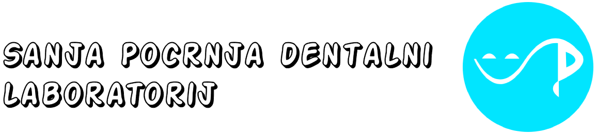
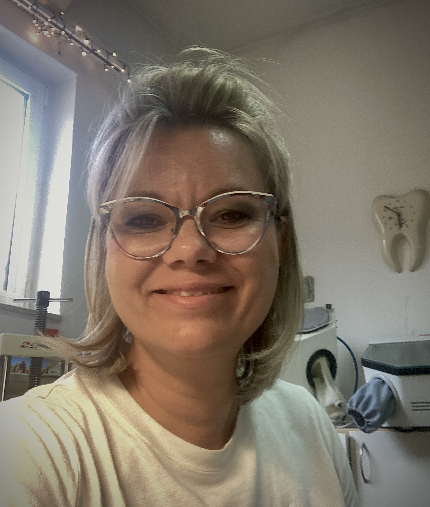

Metal-keramička krunica
Metal-keramička krunica
Kombinira metalnu bazu i keramiku za čvrstoću i prirodan izgled. Standard u dentalnoj protetici, posebno za stražnje zube.

Preciznost koja vraća osmijeh.
Metal-keramička krunica
Kombinira metalnu bazu i keramiku za čvrstoću i prirodan izgled. Standard u dentalnoj protetici, posebno za stražnje zube.
Cirkonska krunica
Visokoestetska, izuzetno čvrsta i biokompatibilna krunica, idealna za prednje i stražnje zube. Ne sadrži metal.
Potpuna keramička krunica
Najbolja estetika – potpuno bez metala, prozirnost i boja kao prirodan zub. Preporučuje se za prednje zube.
Zubni most
Fiksni nadomjestak koji povezuje praznine između zuba. Vraća funkciju i estetiku kod gubitka jednog ili više zuba.
Ljuskice (veneers)
Tanki keramički nadomjesci za prednju površinu zuba. Estetski ispravljaju oblik, boju i položaj zuba.
Totalna proteza
Mobilni nadomjestak za potpunu bezubost. Omogućuje žvakanje i vraća osmijeh osobama bez zuba.
Djelomična proteza
Mobilni protetski rad za djelomičnu bezubost. Oslanja se na preostale zube i sluznicu.
Protetika na implantatima
Krunice, mostovi ili proteze učvršćene na implantatima. Vrhunska funkcija i estetika za trajno rješenje bezubosti.

Sanja Dentalni Laboratorij pruža precizna i kvalitetna dentalna rješenja uz suvremenu tehnologiju i stručnost. Posvećeni smo izradi vrhunskih protetskih radova koji osiguravaju funkcionalnost i prirodan izgled — saznaj više.
Vidi više...Saznaj nešto više o uslugama i cijenama Sanja Dental laboratorija. Otkrij širok spektar kvalitetnih dentalnih rješenja izrađenih uz vrhunsku preciznost i modernu tehnologiju.
Vidi više...Kontaktirajte Sanja Dental laboratorij za sve informacije o uslugama i suradnji. Ovdje možete pronaći i našu lokaciju kako biste nas lakše posjetili ili dogovorili termin.
Vidi više...